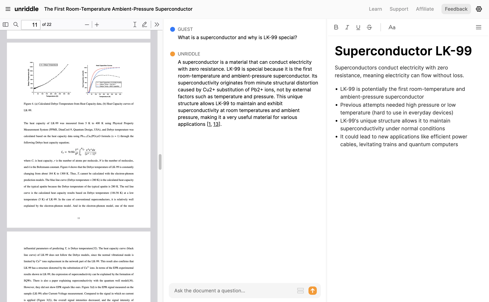
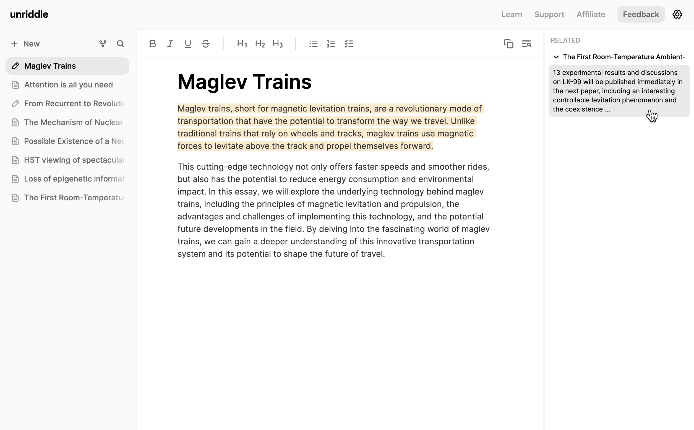
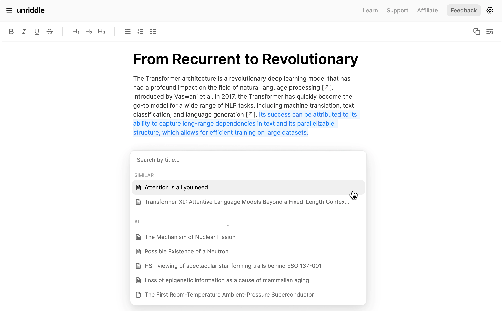

Read faster.
Write
better.
Quickly find info in documents, simplify complex
topics, take notes and write with the power of AI.
Join 500,000+ researchers



Trusted by thousands
of
researchers and students
From the classroom to the boardroom.
It all starts with your
information sources.
Unriddle generates an AI assistant on top of any document so you can
quickly find, summarize and understand info. No more endless skimming.
Exactly what you need at the
exact moment you need it.
Unriddle understands the meaning behind your writing and automatically links you to relevant things you’ve read and written about in the past.
Easily write,cite and
uncover hidden themes.
Highlight text and Unriddle will show you the most relevant sources from your library using AI. Never lose a citation again.
